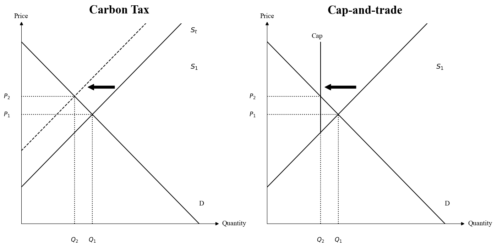

In the battle against climate change, no course of action is perfect. Faced with difficult trade-offs, policymakers must balance environmental goals against economic and political realities by considering approaches from market mechanisms to direct intervention. A common debate in environmental economics concerns the efficacy of various policies such as green energy subsidies, carbon taxes, and cap-and-trade in reducing emissions. In this essay, I compare the most discussed methods of emissions reduction—taxes and subsidies on carbon—concluding that, despite certain flaws, carbon taxes are a more efficient means of environmental protection than subsidies. I then investigate potential alternatives for emissions reduction, including command-and-control and cap-and-trade. Finally, I explore the overarching challenges inherent in crafting effective climate policies and offer concluding reflections on their broader complexities. This essay does not propose a policy to solve climate change; rather, it evaluates the relative efficacy of competing policy frameworks, with the objective of informing more effective and context-sensitive climate governance.
Subsidies vs. Carbon Taxation
Studies on renewable energy subsidies have consistently shown that they yield a minuscule reduction in emissions, compared to carbon taxation. For instance, in the U.S., renewable electricity subsidies achieved a negligible annual CO₂ reduction of 0.3 percent, and globally, biofuel subsidies in fact resulted in a net increase in emissions of 4.8 million metric (Murray et al. 572). What explains the underwhelming performance of subsidies? In the case of electricity, even though federal tax incentives expanded renewable power generation, the proportion of power generated by renewables still only constitutes a trivial share of the national electricity production (National Research Council 70). In sectors such as biofuels and electric vehicles, lower prices increased demand, offsetting many emissions reduction during fuel production (Murray et al. 572; Miron). Carbon taxation has been far more effective in reducing emissions. In Britain, the Carbon Price Support (CPS) policy, which placed a tax on the power sector, resulted in a 55 percent decrease in emissions (Gugler et al. 2); in Sweden, similar policies reduced carbon emissions from transport by 11 percent (Andersson 1). Whereas subsidies often fail to reduce emissions, carbon taxation, as seen in Britain and Sweden, has driven significant emissions reductions.
The two policies also differ greatly in terms of cost-effectiveness. Consistently, evidence indicates that carbon taxation produces a lower marginal abatement cost (i.e., the cost of reducing emissions by one additional metric ton of CO₂ equivalent). For instance, in Germany, where subsidies are the primary policy mechanism, the marginal abatement costs for wind and solar energy are €206 and €978 per metric ton, respectively. Britain, on the other hand, achieved significantly lower abatement costs of €36 and €55 owing to its carbon tax. Although Britain enjoys some geographic advantages for renewables such factors are insufficient to fully explain the substantive disparity in marginal abatement costs (Gugler et al. 5). Similarly, in the U.S., the marginal abatement cost of subsidies introduced by recent legislation is around $62; a potential carbon tax would reduce this to approximately $10 (Bistline et al. 3, 48). In addition to lowering costs, carbon taxes can also generate significant revenue: a carbon tax of $20 per metric ton of CO₂ in the U.S. could yield over $100 billion in annual government revenue (Aldy and Stavins 156). In fact, if implemented as a revenue-neutral policy, such a tax could offset other taxes, for example, through a household rebate, or through reductions in corporate or payroll taxes (Marshall and Archer). The lower abatement costs of carbon taxation and its potential to generate substantial revenue underscore its cost-effectiveness compared to subsidies (see table 1).
| Carbon pricing | Energy subsidy | |
|---|---|---|
| Emissions impact | Substantially reduces emissions; highly effective in reducing CO₂. | Minimal impact; often leads to only slight or no decreases in emissions. |
| Cost-effectiveness | Lower costs; generates revenue; more economically efficient. | Higher costs; less efficient due to high marginal abatement costs. |
| Feasibility | Politically challenging, though public support is rising. | Popular and feasible; perceived by voters as beneficial. |
That said, subsidies have a noticeable advantage over taxes in one major respect— feasibility. Since taxes impose direct costs on consumers, they tend to be less popular than subsidies (Bernton; Jabakhanji; Rubin and Sengupta; Taylor and Hoyle).
Overall, despite the greater political feasibility of subsidies, carbon taxes represent a more effective policy instrument; they produce greater emissions reductions at a relatively lower cost, making them a more effective approach for combating climate change. While political challenges remain a barrier to widespread implementation, attempts to improve public awareness and acceptance of carbon taxation are ongoing.
Policy Alternatives
Having established that carbon taxes generally outperform subsidies in reducing emissions at a lower cost, we must now situate this finding within the broader array of available climate policy instruments. The most direct alternative is command-and-control (CAC) regulation, that is, mandating certain types of technologies or specifying allowable emissions levels. While there have been prominent examples of success with CAC regulations, most notably the Montreal Protocol, such approaches are typically less cost-effective than market-based instruments for achieving emissions reductions and often represent suboptimal solutions in complex, multi-source pollution contexts (Aldy and Stavins 154).
Another widely studied and increasingly implemented policy instrument is the cap-and-trade system, a market-based approach to emissions regulation. In a cap-and-trade system, the government sets a goal for carbon reduction and auctions a corresponding number of permits to firms, each permit granting the right to emit a specific quantity of greenhouse gases. Firms can then trade these permits as needed, incentivizing them to reduce emissions. This strategy confers several advantages. First, because firms can freely trade emissions permits, the price of permits can dynamically adapt to account for changes in marginal abatement costs, thereby achieving allocative efficiency over an extended period (Aldy and Stavins 157–58). Second, cap-and-trade is generally relatively politically viable because it avoids the negative reputation associated with taxation (Frank). However, cap-and-trade systems also carry notable drawbacks compared to carbon taxation, as they can be more expensive to administer and involve a complex and often imprecise process for determining the number of permits to distribute initially (see fig. 2).

A more recent proposal receiving scholarly attention is the Extraction-Production Tax (EPT), which combines a tax on domestic fossil fuel extraction with a tax on emissions from domestic production. By distributing the tax burden across both upstream and downstream actors, a EPT not only reduces opportunities for emissions to shift across stages of the energy supply chain but may also mitigate administrative complexity and political resistance. That being said, the merits of such a strategy have yet to be examined in depth with empirical evidence (Weisbach and Kortum).
[], no single climate policy works optimally in every setting. In British Columbia, a revenue-neutral carbon tax reduced emissions by 5-15 percent while having a negligible effect on economic growth (Murray and Rivers 678). Under the U.S. Clean Air Act, the aggregate emissions of six key air pollutants declined by 78 percent between 1970 and 2021, substantially improving public health (State Air Trends & Successes: The StATS Report 3). From 2013 to 2017, California’s Cap-and-Trade Program reduced emissions by 5.3 percent while generating approximately $12.5 billion in revenue, which the state reinvested into clean energy (Center for Climate and Energy Solutions). The efficacy of these distinct policies underscores how they were strategically designed to align with their respective regional contexts, informed by comprehensive assessments of local circumstances. Determining which policy best fits a given geography is a complex question beyond the scope of this essay; nonetheless, although choosing the right policy instrument is important, the evidence indicates that effectiveness hinges more on the broader economic, institutional, and geographic context than on the choice of policy.
Broader Issues
Beyond selecting a specific strategy to combat climate change, it is equally important to address the persistent challenges that arise regardless of the approach taken. The most pertinent problem is emissions leakage, as energy-intensive industries may migrate to areas of the world where restrictions on carbon emissions are less intense, negating the effects of an emissions reduction plan. Numerous solutions have been proposed to address this issue, including import tariffs, internationally standardized carbon taxes, and global cap-and-trade systems. However, each of these approaches carries inherent challenges: import tariffs often suffer from pricing inaccuracies, efforts to harmonize domestic policies are frequently impeded by the lack of international cooperation and divergent national interests, and cap-and-trade mechanisms face significant obstacles regarding international legal jurisdiction and enforcement (Aldy and Stavins 169–70).
While mitigating emissions leakage is a key concern, effective climate policies must also address broader structural distortions in energy markets. One of the most crucial steps towards reducing emissions that nations can take is the reduction of subsidies for “dirty” energy sources such as oil or coal. Such subsidies exacerbate environmental degradation, impose significant fiscal burdens on governments, and diminish the effectiveness of renewable energy and recycling efforts (Myers 87). Moreover, they can be highly regressive, as up to 80 percent of a gasoline subsidy, 65 percent of diesel subsidy, and 70 percent of liquefied petroleum subsidy only benefit the wealthiest 40 percent of households (Coady et al. 12). These regressive patterns are made worse by the political appeal of subsidies, making them difficult to dismantle in the long term. In India, for example, electricity subsidies continue to enjoy broad popular support despite contributing to fiscal imbalances and hindering environmental sustainability progress (Subramanian and Navneeraj). Although there are formidable political challenges involved, reducing “dirty” energy subsidies is essential for promoting equity, fiscal responsibility and environmental sustainability.
Conclusion
In the end, we must acknowledge that there is no universally applicable solution to climate change. While carbon taxes generally demonstrate greater effectiveness than subsidies, as established earlier, each policy instrument, from taxation to subsidies to cap-and-trade, has precise advantages and limitations that must be considered within the particular context of its implementation. In other words, what determines the efficacy of a particular policy is its effectiveness in specific regions of the world, not its theoretical effectiveness in a global, homogeneous environment. Moreover, in crafting effective climate policy, we must also address the adjacent issues of emissions leakage, fossil fuel subsidies, and political feasibility, which can undermine the success of even the most well-designed policies.
Ultimately, as we confront the climate crisis, we must not only ask “which policy,” but also “what works here, now, and at the lowest social cost.”
Bibliography
Aldy, Joseph E., and Robert N. Stavins. “The Promise and Problems of Pricing Carbon.” The Journal of Environment & Development, Apr. 2012. Sage CA: Los Angeles, CA, journals.sagepub.com, https://doi.org/10.1177/1070496512442508.
Andersson, Julius J. “Carbon Taxes and CO2 Emissions: Sweden as a Case Study.” American Economic Journal-Economic Policy, vol. 11, no. 4, Nov. 2019, pp. 1–30. www.aeaweb.org, https://doi.org/10.1257/pol.20170144.
Bernton, Hal. “Washington State Voters Reject Carbon-Fee Initiative.” The Seattle Times, 6 Nov. 2018, https://www.seattletimes.com/seattle-news/politics/voters-rejecting-carbon-fee-in-first-day-returns/.
Bistline, John E. T., et al. “Economic Implications of the Climate Provisions of the Inflation Reduction Act.” Brookings Papers on Economic Activity, vol. 2023, no. 1, 2023, pp. 77– 182. Project MUSE, https://muse.jhu.edu/pub/1/article/919359.
Center for Climate and Energy Solutions. California Cap and Trade. https://www.c2es.org/content/california-cap-and-trade/. Accessed 5 Feb. 2025.
Coady, David, et al. “Petroleum Product Subsidies: Costly, Inequitable, and Rising.” IMF Staff Position Notes, vol. 2010, Jan. 2010. ResearchGate, https://doi.org/10.5089/9781455239108.004.
Frank, Charles. “Pricing Carbon: A Carbon Tax or Cap-and-Trade?” Brookings, 12 Aug. 2014, https://www.brookings.edu/articles/pricing-carbon-a-carbon-tax-or-cap-and-trade/.
Gugler, Klaus, et al. “Effectiveness of Climate Policies: Carbon Pricing vs. Subsidizing Renewables.” Journal of Environmental Economics and Management, vol. 106, Mar. 2021, p. 102405. ScienceDirect, https://doi.org/10.1016/j.jeem.2020.102405.
Jabakhanji, Sara. “Federal Carbon Tax ‘has to Go,’ Says Ontario Premier.” CBC News, 2 Apr. 2024. CBC.ca, https://www.cbc.ca/news/canada/toronto/doug-ford-carbon-tax-ontario-1.7161131.
Marshall, Jonathan, and Robert Archer. “10 Fast Facts about Revenue-Neutral Carbon Fees.” Citizens’ Climate Lobby, 31 Aug. 2018, https://citizensclimatelobby.org/blog/policy/10-facts-revenue-neutral-carbon-fees/.
Miron, Jeffrey. “Clean Energy Subsidies vs. A Carbon Tax.” Cato Institute, 22 Jan. 2024, https://www.cato.org/blog/clean-energy-subsidies-versus-carbon-tax.
Murray, Brian, et al. “How Effective Are US Renewable Energy Subsidies in Cutting Greenhouse Gases?” American Economic Review, vol. 104, no. 5, May 2014, pp. 569– 74. www.aeaweb.org, https://doi.org/10.1257/aer.104.5.569.
Murray, Brian, and Nicholas Rivers. “British Columbia’s Revenue-Neutral Carbon Tax: A Review of the Latest ‘Grand Experiment’ in Environmental Policy.” Energy Policy, vol. 86, Nov. 2015, pp. 674–83. ScienceDirect, https://doi.org/10.1016/j.enpol.2015.08.011.
Myers, Norman. “Perverse Subsidies.” RSA Journal, vol. 147, no. 5490, 1999, pp. 84–91. JSTOR, https://www.jstor.org/stable/41378805.
National Research Council. Effects of U.S. Tax Policy on Greenhouse Gas Emissions. National Academies Press, 2013. National Academies Press, https://doi.org/10.17226/18299.
Rubin, Alissa J., and Somini Sengupta. “‘Yellow Vest’ Protests Shake France. Here’s the Lesson for Climate Change.” New York Times, 6 Dec. 2018. NYTimes.com, https://www.nytimes.com/2018/12/06/world/europe/france-fuel-carbon-tax.html.
State Air Trends & Successes: The StATS Report. AAPCA, 2 May 2024, https://cleanairact.org/wp-content/uploads/2024/05/2024_AAPCA_StATS_Final.pdf.
Subramanian, Arvind, and Sharma Navneeraj. “India’s Climate Dilemma.” Project Syndicate, 10 Jan. 2024, https://www.project-syndicate.org/commentary/fighting-climate-change-requires-india-cut-electricity-subsidies-by-arvind-subramanian-and-navneeraj-sharma-2024-01.
Taylor, Rob, and Rhiannon Hoyle. “Australia Repeals Carbon Tax.” Wall Street Journal, 17 Jul. 2014. www.wsj.com, http://online.wsj.com/articles/australia-repeals-carbon-tax-1405560964.
Weisbach, David A., and Samuel S. Kortum. Climate Change Policy in the International Context: Solving the Carbon Leakage Problem. 4328814, Social Science Research Network, 16 Jan. 2023. papers.ssrn.com, https://doi.org/10.2139/ssrn.4328814.